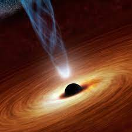

Um buraco negro é uma espécie de abismo cósmico que suga para si tudo o que se aproxima - a uma determinada distância - dele. Nem mesmo a luz escapa de ser atraída por esses objetos. Por isso que os buracos negros são, de fato, negros. E isso acontece porque a atração gravitacional desses corpos é extremamente forte
Existem três tipos catalogados pelos astrônomos: buracos negros estelares, buracos negros intermediários e buracos negros supermassivos. Os buracos negros estelares são os menores. Eles são formados quando uma estrela massiva morre, numa explosão chamada de supernova. Geralmente têm uma massa (a quantidade de matéria de um objeto) entre 10 e 100 vezes maior que o Sol.
Já os intermediários - entre 100 e 100 mil vezes a massa do Sol - não são muito comuns. É tão difícil encontrá-los que alguns cientistas questionam se esses de fato existem. Mas no ano passado, um grupo pesquisadores apresentou um trabalho sobre a descoberta de um deles. Por fim, os supermassivos habitam o centro da maioria das galáxias do Universo, e geralmente surgem após a formação de suas galáxias, engolindo tudo o que veem pela frente. Como o próprio nome sugere, eles são um dos objetos mais pesados do espaço, com massas que variam de milhões a bilhões de massas solares.
